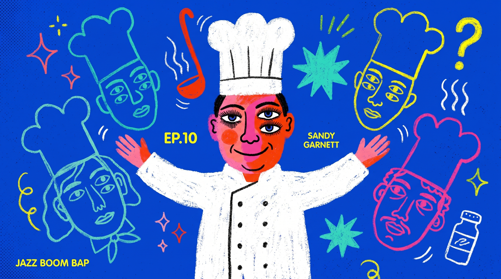
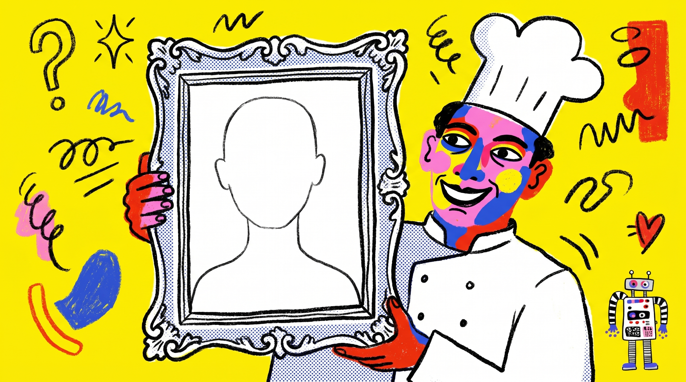

← 回入口
插圖風格實驗 ②
這次「為風格而生」
不再把舊概念硬套——同一篇 Achatz（用 AI 發明虛構主廚），但概念是專為這個 bold 風設計的。看看是不是就不一樣了。
跟上次的差別：上次是拿「為 Risograph 設計的克制概念」去套大膽風（安靜的點子穿大聲的衣服）。這次反過來——先有一個本身就荒謬、圖像感強的點子，再讓風格去畫它。
概念 A · 主廚與他發明的一群（幽靈）廚師
主廚張開雙臂，周圍漂著一群他「無中生有」的廚師——每個都只是沒畫完的輪廓。熱鬧、populated，正中這風格的拼貼能量。

概念 B · 隆重介紹一位不存在的人
主廚得意地舉起一個畫框，框裡卻是一張空白的臉。單一、graphic、一眼讀懂的荒謬。

一個小瑕疵：參考影格本身有影片字幕（JAZZ BOOM BAP 等），模型沾到一點點殘留文字。正式用會把錨點裁乾淨或補圖清掉，不影響判斷風格。